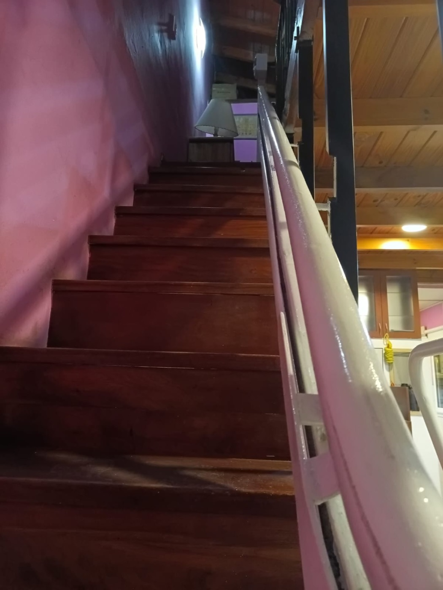

Salvaescaleras en Buenos Aires y GBA
Que las escaleras no te frenen en tu propia casa.
Instalamos salvaescaleras en escaleras rectas y curvas, adentro y afuera de la casa. Para que vos, tu mamá, tu papá o quien lo necesite pueda subir y bajar tranquilo, sin ayuda y sin miedo a caerse.
- ✓ A medida de tu escalera
- ✓ Instalación profesional
- ✓ Atención directa por WhatsApp
Qué es
Un salvaescaleras es un “ascensor” para tu escalera
Es un equipo con motor que va pegado a la escalera, sobre un riel. Te sentás (o te parás, o subís con tu silla de ruedas), apretás un botón y te lleva arriba o abajo. Sin esfuerzo, sin obras grandes, y la escalera sigue siendo de todos.
Mirá cómo funciona →
Para quién
¿Para quién es un salvaescaleras?
Adultos mayores
Evitan caídas y cansancio y siguen viviendo en su casa de siempre, con independencia.
Movilidad reducida
Personas con discapacidad motriz o que usan silla de ruedas acceden a todos los niveles.
Recuperación
Post-operatorios, lesiones o tratamientos que dificultan subir escalones por un tiempo.
Familias
Tranquilidad para hijos y cuidadores: menos riesgo, menos ayuda constante.
Tipos
Hay uno para cada tipo de escalera
Salvaescaleras recto
Para escaleras de tramo único, sin giros. Instalación más ágil y la opción más simple.
Salvaescaleras curvo
Riel a medida para escaleras con curvas, caracol o descansos, como el de nuestras fotos.
Salvaescaleras exterior
Para patios, entradas y terrazas, preparado para el clima y el uso al aire libre.
Cómo trabajamos
Así de simple: 4 pasos
- 1
Nos escribís
Por WhatsApp nos contás tu caso y mandás una foto de la escalera.
- 2
Visita y medición
Relevamos escalones, giros y espacio para diseñar el equipo.
- 3
Fabricación e instalación
Hacemos el equipo a medida y lo instalamos en tu casa.
- 4
Uso y mantenimiento
Te enseñamos a usarlo y seguimos para cualquier ajuste o service.
Mirá cómo funciona
Mirá uno funcionando en una casa real
Tranquilidad
Pensado para que lo uses sin dudar
Seguro
Frenos, cinturón y botones de parada. Subís y bajás despacio, con firmeza.
Fácil de usar
Un botón para subir, otro para bajar. Lo aprende cualquiera, a cualquier edad.
Presupuesto claro
Cada escalera es distinta, por eso te pasamos un presupuesto a medida: sin sorpresas.
Preguntas frecuentes
Lo que todos nos preguntan
¿Qué es un salvaescaleras?
Es un equipo motorizado que se instala sobre la escalera y traslada a una persona (sentada en una silla o parada/en silla de ruedas sobre una plataforma) de un nivel a otro, de forma segura y sin esfuerzo.
¿Se puede instalar en una escalera curva?
Sí. Los salvaescaleras curvos se fabrican a medida siguiendo el recorrido real de la escalera, con curvas, descansos o giros. Es la solución para escaleras que no son rectas.
¿Sirve para una persona en silla de ruedas?
Sí, con una plataforma salvaescaleras: la persona sube con su silla de ruedas sobre una base con barandas de seguridad.
¿Se puede instalar en el exterior?
Sí. Hay equipos pensados para escaleras exteriores (patios, entradas, terrazas), con protección frente a lluvia y humedad.
¿Cuánto cuesta un salvaescaleras?
Depende del tipo de escalera (recta o curva), la cantidad de escalones, si es interior o exterior y si lleva silla o plataforma. Por eso se cotiza a medida: escribinos por WhatsApp, contanos tu caso y te pasamos un presupuesto.
¿Cuánto demora la instalación?
Depende del modelo y de la escalera. Tras una visita técnica para relevar medidas, coordinamos fabricación e instalación y te confirmamos plazos reales.
¿Se puede en tu escalera? Probablemente sí
Mandale una foto a Fernando por WhatsApp y te cuenta qué se puede hacer.